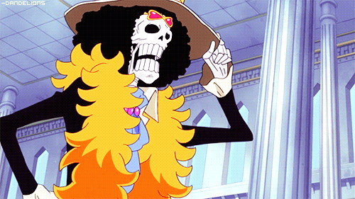

Thong tin ve One Piece

"Linh Vương"Brook
“Linh Vương” Brook là Nhạc Công của Băng Hải Tặc Mũ Rơm. Ông là 1 bộ xương mà nhóm Mũ Rơm nhìn thấy trên Con Tàu Ma khi trôi dạt vào vùng Tam Giác Florian. Ông là người mang năng lực trái Ác Quỷ, trái Yomi Yomi, và đã được hồi sinh, được trở lại với cuộc sống trong hình dạng kỳ lạ vì sức mạnh của trái Ác Quỷ. Ông là thành viên thứ 9 trong băng, và là thành viên thứ 8 gia nhập vào băng của Luffy, trở thành người lớn tuổi nhất trên tàu. Và là kiếm sĩ thứ 2 trên tàu, cùng với Roronoa Zoro. Ông đảm nhận vai trò Nhạc Công mà Luffy đã tìm kiếm từ lâu cho băng của mình, kể từ lúc bắt đầu cuộc hành trình. Tền thưởng truy nã hiện tại của ông là 83,000,000 Beri.
Thông tin chung
Tên Tiếng Nhật: ブルック
Tên Tiếng Latin: Burukku
Tên Tiếng Anh: Brook
Lần Đầu Xuất Hiện: Chapter 442; Episode 337
Thuộc Tổ Chức: Băng Hải Tặc Mũ Rơm,Băng Hải Tặc Rumbar(Cũ)
Nghề Nghiệp: Nhạc Công,Kiếm Sĩ,Thuyền Trưởng(Cũ),Chỉ Huy “Đội Tập Kích Hoàng Gia”(cũ” Xuất Thân: Biển Bắc
Biệt Danh: Trước Timeskip: “Quý Ngài Xương”; “Chết chỉ còn xương”; “Kiếm Sĩ Ngân Nga”; “Brook Ngân Nga”;
Giữa Timeskip: “Chúa Tể Sa-tan”
Sau Timeskip: “Linh Vương
Tuổi: 88 (lúc xuất hiện); 90 (sau Timeskip)
Tình Trạng: Còn Sống
Ngày Sinh: 03 Tháng 04
Tổng Truy Nã: 83.000.000฿
xuất hiện của Brook
Trước Khi Chết
Trước khi chết, Brook là một người cao, gầy, có khuôn mặt khá đặc biệt. Ông có 1 chòm râu dê và 1 vài vết bỏng. Ông đeo 1 chiếc kính đen và không bao giờ để lộ đôi mắt của mình. Trên trán ông có 1 vết sẹo nghiêng hình Omega chéo (Ω). Vết sẹo này vẫn có thể thấy ở hình dáng bộ xương của ông, trông như 1 vết nứt nơi hộp sọ.Bề ngoài của Brook, đi kèm với phong cách, quần áo giống như 1 loại phong cách và quần áo ta thường thấy ở các nghệ sĩ âm nhạc khác nhau như Ozzy Osbourne, Jimi Hendrix, Slash, và một vài người nổi tiếng về âm nhạc khác.
Trước Timeskip (Sau Khi Hồi Sinh)
Brook là 1 bộ xương rất cao mặc 1 bộ trang phục hoàn chỉnh với chiếc mũ cao và 1 cây gậy. Khi đứng cao 266 cm (8’8½”) , ông là thành viên cao nhất của Băng Mũ Rơm. Mặc dù không có da, ông vẫn có một mái tóc xù được ông giải thích là vì tóc của ông đã mọc rễ sâu vào trong sọ. Brook có phong cách của 1 quý ông gồm 1 chiếc áo khoác, nón cao, quần tây và mái tóc xù, có màu đen, lớp lót bên trong chiếc áo khoác của ông có màu Vàng-Cam. Cà-Vạt màu Xanh đeo ở giữa áo khoác và xung quanh cổ. Thanh kiếm được giấu bên trong cây gậy của Brook có màu Tím. Ngoài ra, bộ quần áo của ông đã tả tơi khá nhiều trong cuộc sống ẩn dật trên Con Tàu Ma.
Sau Timeskip
Quần áo của ông đã thay đổi, cao cấp hơn và nhiều màu sắc hơn, để thể hiện rõ ông là một ngôi sao nhạc Rock. Ông có chiếc kính hình trái tim, 1 chiếc khăn lông quàng cổ màu vàng, 1 chiếc vương miệng màu Vàng với thiết kế các viên ngọc Đỏ trên vương miệng chồng lên chiếc mũ cao. Dù chỉ là 1 bộ xương, ông đã cao lên đến 277 cm (9’1″), và vẫn là thành viên cao nhất trong Băng Mũ Rơm.
Tại Arc Punk Hazard , ông mặc 1 chiếc áo khoác sọc dài lòe lẹt, sau khi lấy nó từ 1 thành viên trong băng Tuần Tra Nhân Mã của Râu Nâu
Tại Arc Dressrosa, Ông mặc 1 chiếc áo khoác dài màu Đỏ Sẫm và 1 chiếc quần màu Vàng. Trong khi tại Zou, trang phục thứ 2 ông mặc là một chiếc áo sơ mi màu tối có hoa văn là các vòng tròn nhỏ chồng lên nhau (giống như các hoa văn trên trái ác quỷ nhân tạo Smiley), quần sọc, và một đôi giày màu đen. Ông vẫn mặc trang phục như trước Timeskip với chiếc mũ đen của mình, 1 chiếc vòng hạt trên cổ, và ông đã bỏ chiếc kính hình trái tim của mình, quay về với cặp kính đen truyền thống.
Tại Arc Zou, ông nói rằng chiếc áo khoác màu đen và tấm choàng lông cùng chiếc mũ cao có chuỗi hạt của ông đã bị cắn nát khi khi ông bị truy đuổi bới nhóm Fan Người Chó của tộc Minks trước khi gặp lại nhóm của Luffy.
Năng lực và sức mạnh
Dù nhiều lúc ông có vẻ khá ngốc với các hành vi rồ dại cùng với Luffy lúc bình thường như khi ở trên Tàu,ông vẫn là 1 đối thủ đáng gờm . Những kinh nghiệm và kỹ năng của mình mà ông tích lũy từ thời Vua Hải Tặc, Gol D. Roger còn sống, Brook,dù ở bất kì điểm nào,vẫn là 1 Hải Tặc kì cựu (dù đặc điểm này đã giảm bớt phần nào bởi thái độ của ông,cùng với việc bị cô lập tại Florian Triangle 1 thời gian dài khiến ông bị lạc hậu về kiến thức nghiêm trọng so với thời bây giờ). Mặc dù ông thường để lộ vẻ sợ hãi một cách dễ dàng trước kẻ thù mạnh hoặc những kẻ có sức mạnh siêu nhiên , ông vẫn có thể bình tĩnh để bảo vệ các đồng đội của mình. Như khi ông khéo léo nhận ra mình có thể lừa được Jora và đánh bại ả, và cả khi ông hi sinh bản thân mình với hi vọng sẽ cản được Kuma.

-Đặc Trưng Nhân Vật
Vai trò của Brook đối với các đồng đội đã là điều hiển nhiên trong Thriller Bark Arc, nơi mà ông đã chứng mình rằng mình không thể thiếu đối với nhóm Mũ Rơm về cuộc gặp gỡ của họ với các Xác Sống trên Đảo-Tàu Biển.
Brook là Nhạc Sĩ có thể chơi bất kì loại nhạc cụ nào.Ông thường sử dụng 1 cây Violin để chơi nhạc,mặc dù sau 2 năm,ông đã chuyển sang dùng đàn Ghi-ta,khả năng dùng Viloin của ông vẫn còn tốt khi ông có thể dùng nó để đàn cho đàn cá voi giống Laboon nghe khi ông gặp chúng.
Khi chiến đấu,trận chiến của ông thường mang yếu tố hài hước.Khi mà các đồng đội của ông bị ru ngủ khi ông chiến đấu với Băng Kị Sĩ Cá Chuồn,giả vờ chết giữa chừng trong một trận chiến và tung mình vào một khu vực nào đó với kết quả không như mong muốn.
Brook cũng có sức chịu đựng tốt,giúp cho ông vẫn còn tỉnh táo khi nhận phải đòn Bom Nén từ Bartholomew Kuma,tuy nhiên ông không thể đứng dậy hoặc có thể do ông không muốn.
Sau Timeskip, sức mạnh của Brook đã được chứng minh là có ích trong các cuộc chiến,Tuy nhiên,tính cách trẻ con của ông phần nào cản trở những kỹ năng đó
Ông đã mạnh lên đáng kể về mặt sức mạnh thế chất,bây giờ ông có thể dẫm 1 cú đủ mạnh để phá vỡ lớp Băng Dày,có thể chặn đứng 1 cú ném từ một Người Cá đã cắn Thuốc Tăng Lực.Ông thậm chí còn có thể ngăn chặn 1 cuộc tấn công từ đám Cướp Biển Nhân Mã một cách dễ dàng.
-Tài Năng Âm Nhạc
Sự yêu thích cuồng nhiệt với Âm Nhạc của Brook ngoài giúp ông vượt qua những ngày tháng cô đơn dai dẳng của mình,mà còn là 1 công cụ chiến đấu của riêng ông.Kỹ thuật đặc biệt của ông,”Nemuriuta Flanc”,dịch thô là “Bài Hát Ru”.Cho thấy ông có thể sử dụng Cây Violin cùng với thanh kiếm của mình như 1 cây gãy đàn của một nghệ sĩ Violin,tạo ra 1 giai điệu nhẹ nhàng du dương làm cho bất cứ ai nghe thấy đều rơi vào giấc ngủ ngay lập tức.
Do khả năng Âm Nhạc của mình,Brook vận dụng cách di chuyển theo nhịp điệu trong các trận chiến,nhờ kỹ năng Âm Nhạc của mình mà ông đã trở thành ngôi sao nhạc Rock nổi tiếng trên thế giới trong hai năm bị chia cắt với Băng Mũ Rơm,ký ức của ông về Băng Mũ Rơm giúp ông làm rung động hàng triệu khán giả,khiến họ khóc hoặc ngất xỉu tại buổi biểu diễn cuối cùng của mình tại Sabaody.
Ngoài ra, Âm Nhạc của ông còn có khả năng thay đổi thái độ và cảm xúc của người nghe chẳng hạn như lúc ông được ném đến đảo Namakura bởi Bartholomew Kuma. Âm nhạc của ông đã truyền cảm hứng cho người dân ở đó để họ đứng lên chiến đấu với tộc Tay Dài.
Trong trận đấu với Băng Tân Hải Tặc Người Cá, Brook đã nói rằng ông đã mài dũa khả năng của mình đến mức ông có thể thay đổi hoàn toàn tâm trạng và thôi miên đối thủ của mình, khiến chúng tin rằng chúng đang ở lễ hội.Chúng tin đó là thật đến mức dùng các khẩu pháo của mình như các khẩu pháo hoa và bắn ăn mừng. Với khả năng của một Nhạc Công, ông có 1 thính giác tuyệt vời, giúp Brook có thể phát hiện ra nơi Zeo ẩn trốn, mặc dù Zeo đã bảo rằng sẽ rất khó tìm ra hắn khi hắn trở nên Vô Hình.
-Trái Ác Quỷ

Lúc còn sống, Brook đã ăn trái Yomi Yomi, một trái Ác Quỷ thuộc hệ Siêu Năng. Nếu ăn trái này, nó sẽ cho phép người ăn sống lại một lần nữa. Linh Hồn của ông đã không thể tìm lại cơ thể của mình trong một thời gian dài khiến cơ thể ông bị phân hủy chỉ còn lại bộ xương. Nhưng nhờ thế, ông đã có được 1 số lợi thế nhất định chỉ có khi ông là 1 bộ xương với sự hổ trợ của trái Ác Quỷ. Một lơi thế đặc biệt là nhờ trọng lượng cực nhẹ của bộ xương trắng, giúp ông có thể chạy cực nhanh và đặc biệt là chạy được cả trên mặt nước. Nhưng cũng như những người ăn trái Ác Quỷ khác, ông vẫn bị chết đuối khi rơi xuống biển. Với quyền năng của trái Ác Quỷ, nó giúp ông hoạt động như 1 người bình thường, sức lực vẫn được giữ nguyên,thực tế là ông vẫn có sức mạnh cơ bắp. Ông vẫn có các hoạt động bình thường như Uống, Ăn, Khóc, Tiêu Hóa và thậm chí cả “Ị”.Ông chứng mình rằng Canxi trong sữa có tác dụng chữa lành nhanh chóng bất kỳ chổ xương gãy nào. Nhờ sự nhanh nhẹn của mình, ông đã di chuyển đủ nhanh né cây lao đang bay tới gần và hạ gục kẻ phóng nó 1 cách dễ dàng.
Do trọng lượng nhẹ bâng từ cơ thể toàn xương của mình, ông có thể thực hiện 1 cú nhảy cực xa và cao, chạy nhanh đến mức có thể chạy trên nước mà không chìm, cất đồ vật trong khoang sọ của mình như vỏ ốc Dial Tone, cơ thể toàn xương giúp ông có sự nhanh nhẹn bằng với Zoro và Sanji, thực tế là ông chịu ít tổn thương hơn với cơ thể toàn xương của mình, giúp xóa bỏ những hạn chế vật lý của 1 cơ thể bình thường, làm cho xương lành lại bằng sữa giúp ông mau khỏe lại nhanh hơn nhiều so với các đồng đội, giúp ông trở thành 1 kẻ ngoan cường trong trận chiến.
Do cơ thể chỉ là xương, ông đủ khả năng chống lại sét và điện. Hơn nữa, Brook có khả năng chống lại chất độc chết người Shinokuni, tuy nhiên ông vẫn bị ảnh hưởng bởi chất độc KYP của Caesar qua đường hô hấp như người bình thường. Phần da thịt đã mục nát, nên ông không còn lo sợ việc bị lão hóa, dù đã sống gần 1 thế kỷ mà ông vẫn không bị các triệu chứng của một người già.
Sau Timeskip, Ông tiết lộ rằng ông có thể tách rời phần tinh thần của ông để di chuyển 1 cách tự do, tương tự như Perona, phần cơ thể cũng không thể di chuyển. Trong trận đấu với Zeo, Brook đã nhớ lại khoảng thời gian 2 năm trước, ông đã khám phá ra sức mạnh thật sự của trái Ác Quỷ Yomi Yomi, thứ giúp ông tồn tại không phải các cơ bắp,cơ quan hay xương, mà chính là tinh thần của ông. Brook cũng chứng minh là có khả năng gắn lại đầu của mình nếu nó bị kéo ra, và theo ông, miễn là nó không bị vỡ vụn, ông vẫn sẽ vô sự trước các đòn tấn công, ông vẫn sẽ có thể tái tạo lại như ban đầu, Brook có thêm khả năng kêu gọi thứ mà ông cho là “Ngọn gió lạnh lẽo đến từ Âm Ti” thông qua thanh kiếm của mình, để đông cứng cơ thể đối thủ của mình với ngọn gió lạnh.
Có 1 thời gian ông là đội trưởng ở quê nhà của mình, Brook rất thành thạo về Kiếm Thuât, Mặc dù nhìn có vẻ ngốc nghếch nhưng trong trận chiến, khả năng của ông được thể hiện rất nhiều, phong cách chiến đấu của ông dường như kết hợp giữa kiếm thuật cổ điển và kĩ thuật Cự Hợp( Iai )
Ưu điểm của Brook là tốc độ phi thường của ông, là do cơ thể nhẹ bâng của mình. Điều này cho phép ông có thể di chuyển và hành động cực nhanh trước khi đối thủ của ông có thể phản ứng kịp, như lúc ông đi qua và thanh tẩy toàn bộ Xác Sống chỉ trong 1 phần nhỏ trên giây, nhanh hơn nhiều so với lúc ông còn sống với đầy đủ da thịt. Với những lợi thế của mình, Brook chiến dấu và hạ gục nhanh chóng vô số kẻ địch cưỡi cá chuồn bay 1 cách hoàn hảo. Mặc dù không có 1 mô cơ nào, có vẻ ông vẫn có thể mạnh lên theo thời gian, khi ông nói với Ryuma rằng ông đã mạnh hơn 5 năm trước rất nhiều.
Đòn tấn công đặc trưng của Brook được gọi là “ Ngân Nga Ba Bước, Thỉ Quát Trảm !!!” (“Hanauta Sancho : Yahazu Giri !!!”). Là kĩ thuật tấn công nhanh nhất của “Đội Tập Kích” ở vương quốc của Brook. Ban đầu nó được gọi là “Khúc cầu hồn dưới lá cờ Kị Sĩ”(“Requiem La Banderole”) nhưng đã được các đồng đội cũ của ông đặt cho nó cái tên như bây giờ. Do tốc độ kinh hoàng của nó kèm sự ồn ào bởi câu hát Ngân Nga của Brook, kẻ thù thường không biết chúng đã bị chém đến khi Brook đi qua và tra thanh kiếm vào vỏ.
Mặc dù là một tay kiếm lanh lẹ, nhưng kỹ năng của ông lại không bằng Zoro, kiếm sĩ còn lại của Băng. Trong khi Brook thua một cách dễ dàng trước Ryuma dù ông đã chiến đấu hết mình, trong khi Ryuma hoàn toàn không dùng hết sức mạnh của hắn. Ông thấy rằng Zoro có thể đánh bại Ryuma khi hắn dùng toàn bộ sức mạnh chỉ bằng 2 thanh kiếm, dù Ryuma đã nói mái tóc xù đã giảm bớt phần nào sức mạnh của Brook.
Tại Sabaody Archipelago, 2 năm trước, ông tấn công 1 Pacifista với 1 tốc độ rất nhanh nhưng lại không gây nhiều thương tổn cho nó và phải được Usopp cứu ngay lúc đó. Tuy nhiên, kết quả lại vô cùng khác khi đến lượt Zoro tấn công. Mặc dù không được cho là ngang sức với Zoro nhưng ông vẫn có thể theo kịp những gì Zoro làm, lúc chiến đấu với Ryuma vẫn chứng tỏ ông là 1 kiếm sỹ lão luyện. Ông hợp tác rất tốt với Zoro, khi hai người cùng hạ gục Kị Sĩ Cá Chuồn, ngay khoảnh khắc mũi lao cách Hatchan chỉ 1 inch.
Sau Timeskip, Brook có thêm 1 khả năng mới từ trái Ác Quỷ của mình, đó là phủ lên thanh kiếm 1 ngọn gió lạnh giá để chém và đóng băng đối thủ, trình độ kiếm thuật của ông đã tăng tiến rất nhiều đến mức nhận được một lời khen từ 1 Samurai của Wano quốc, các đòn “Kiếm Khí” của ông cũng mạnh hơn trước. Một điều đã được chứng minh là Brook có thể cắt được thép, khi ông chém hạ một con Rồng với lớp vảy cứng như thép
Vũ Khí
Brook sử dụng 1 thanh kiếm được gọi là Shikomizue, là 1 một thanh kiếm được giấu bên trong cây gậy, Ông sử dụng thanh kiếm này để thi triển các kĩ năng kiếm pháp của mình trong ít nhất là 50 năm .

Sau Timeskip,Brook đã đặt tên cho thanh kiếm của mình là “Cương Linh” (“Soul Solid”), ông đã phát triển khả năng phủ lên nó với các linh hồn xung quanh ông ,như một cơn gió lạnh giá có thể đóng băng bất cứ ai tiếp xúc nó. Ông tiết lộ rằng ông đã nhờ Tộc Tay Dài mài dũa thanh kiếm cho ông.
Điểm Khác Nhau Giữa Manga Và Anime
Takoyaki
Trên Anime, khi Brook ăn tối cùng Băng Mũ Rơm trong lần gặp gỡ đầu tiên, Sanji đã làm món Takoyaki cho bữa tối hôm đó.
Cảnh này không khác gì nhiều so với trong Manga do cảnh thức ăn trong bữa tối đã được ăn hết, khiến nó tạo ra một mâu thuẫn nhỏ. Cụ thể đó là khi Brook và mọi người thưởng thức xong bữa tiệc Takoyaki do Hatchan mời, Brook đã nói rằng đây là lần đầu ông ăn Takoyaki, dù rằng trước đó ông đã ăn Takoyaki do Sanji làm trên Anime.
Quyết đấu với Ryuma
Những hồi tưởng của Brook trong trận đấu đầu tiên giữa Brook và Ryuma có đôi chút khác nhau giữa 2 phiên bản Anime và Manga.